这里放我的读书笔记、图解教程，以及一些做着玩的小东西。写得慢，但尽量写清楚。
塞尔达、荒野大镖客2、艾尔登法环、原神、盗贼之海——五个完全不同的答案，背后是同一道题：在有限的内存、带宽和浮点精度里，假装整个世界一直都在。先讲清所有大世界共用的底层零件（九宫格流送、CDLOD 地形、HLOD 与 Nanite、21 km 浮点诅咒、虚拟纹理与 SSD、PCG 与「无菌感」、Gerstner 波与 FFT 真海），再逐款拆它们的赌注：化学引擎的「聪明的谎言」、把硬盘当内存、连续竖轴地图、Unity 深度改造、确定性跨服迁移。附五款横向对照表、选型清单、误区汇总与术语速查。
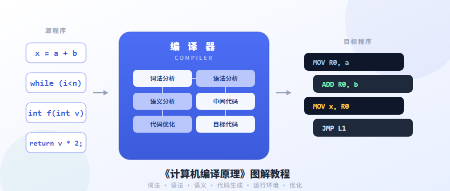
张幸儿 456 页教材压成 48 节。从「编译器就是一台翻译机器」出发，沿六段流水线逐段拆开：文法与 Chomsky 四类、NFA 确定化与 DFA 最小化、LL(1) 的 FIRST／FOLLOW、递归下降与预测分析表、LR(0)／SLR／LALR 项目集（附 id*id+id 完整分析过程）、属性文法与语法制导翻译、四元式与回填、三种存储分配与活动记录、DAG 与循环优化三件套，附概念速查表、上机九步清单与思考题。
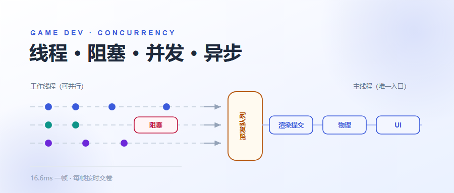
把四个词放回同一个坐标系——帧预算。先画清一帧 16.6ms 里三条泳道（主线程／渲染线程／工作线程）的错位并行，再逐层拆开真实翻车现场：同步加载与 LZMA 整包解压的百毫秒尖峰、协程与 async 的生命周期差异、.Result 主线程死锁的四步闭环、切场景后还在跑的幽灵任务、只在别人机器上崩的数据竞争、锁的四个坑与「本地累积」模式、伪共享与无锁 SPSC 环形队列、Job System 的八条禁令与 Complete 时机，直到帧同步为什么惧怕多线程、WebGL 为什么连线程都不能有。附一线排查速查表（症状→原因→工具）与上线前八条自查清单。
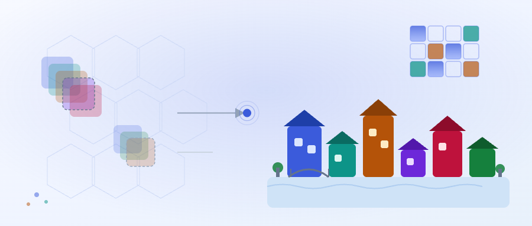
从「一堆带接口的方块」讲起：为什么几条只管邻居的局部规则，能长出看起来像人手设计的城镇。把叠加态、熵、坍缩、传播四步拆成一份能照着敲的 C# 骨架，讲透 Simple Tiled 与 Overlapping 两种模型的取舍，再钻进三个真实案例——Townscaper 的非周期松弛四边形网格与实时重算、《绝境北方》三百块扫边模块与可通行校验、地牢和无限城市的分块缝合与失败降级。附 socket 配色法、权重场、分层 WFC、坐标哈希幂等、五级降级链等一整套能直接落地的工程手法。
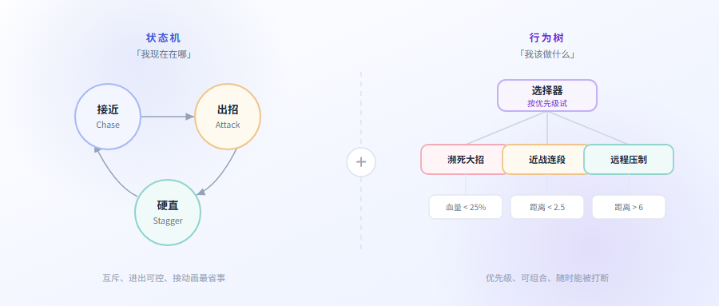
FSM、HFSM、行为树三套架构逐个拆开：状态爆炸的数学原因、Success／Failure／Running 三种返回值为什么缺一不可、Selector 与 Sequence 的翻译口诀、中断与 Abort 为什么最值钱、黑板该放什么不该放什么。再用《空洞骑士》《漫威蜘蛛侠 2》《卡赞》的真实帧数据，把「手感」拆成能调的数字——前摇 0.25 秒反应线、命中与落空两套后摇、硬直的双计数阈值、假后摇的 30 帧陷阱，最后完整推演一个三阶段 Boss。
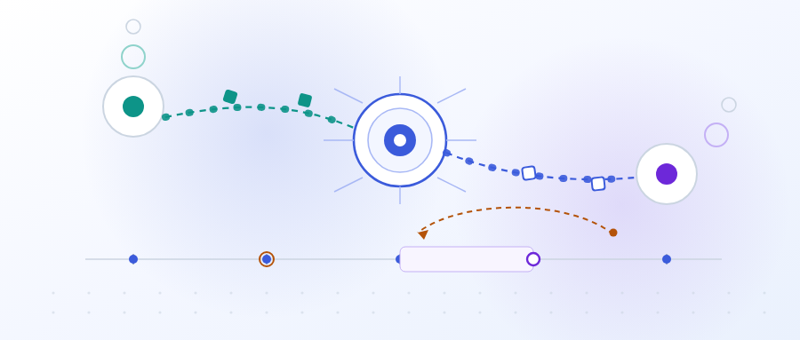
从「按了键要等半秒才动」讲起：延迟／抖动／丢包三者谁最致命、为什么游戏不用 TCP 而要在 UDP 上自建可靠层、tick 与快照为什么必须和输入解耦。再把状态同步与帧同步两条路线摊开对比，讲透让延迟消失的四件套——客户端预测、服务器和解、实体插值、延迟补偿，加上格斗游戏的回滚 netcode。最后落到架构：权威的边界划在哪、带宽分层与差分量化怎么省下 50%~70%、AOI 兴趣管理如何决定 MMO 死活、三种诡异现象（掩体后被杀、探身者优势、橡皮筋）为什么会发生，附一份能直接照着写的客户端／服务器同步循环代码骨架。
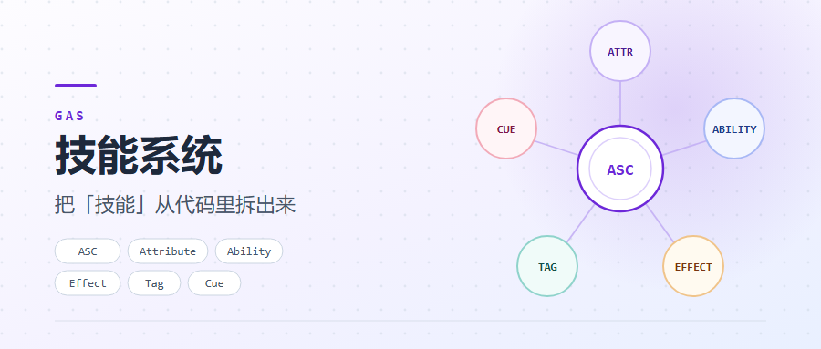
Unreal 的 Gameplay Ability System 常被说成难，难的其实不是想法，是名字太长。这篇把 ASC、Attribute、Ability、Effect、Tag、Cue 六块积木逐个拆开：数值为什么要有「永久值／当前值」两个、属性聚合公式里两个 ×5 为什么叠成 ×9、冷却为什么不是一个计时器、标签怎么替掉满屏 if、堆叠与周期伤害怎么配、客户端预测的记账与回滚边界，附一张「什么时候别用 GAS」的判别表和一份 Unity C# 移植清单。
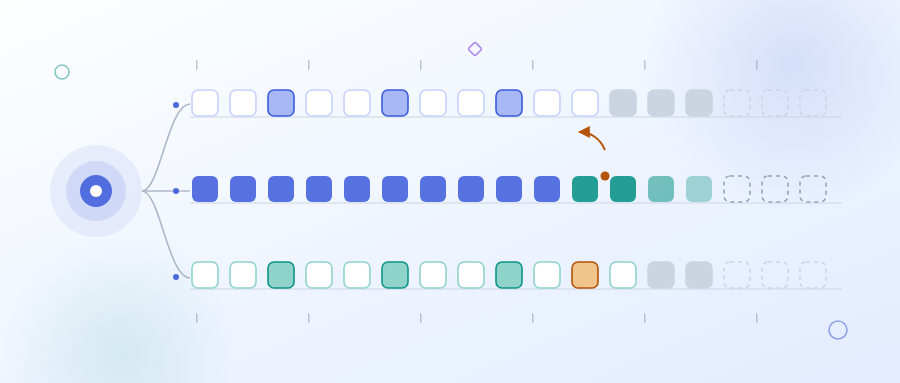
从 Doom 锁步、星际争霸的确定性，到 GGPO 的预测回滚。含三种同步模型的对照与选型三问、逻辑帧率的取法、指令位掩码设计、经典锁步与时间桶的取舍、确定性的四条腿与浮点／定点数解法、逻辑与表现分层的验收标准、可靠 UDP 的冗余发包与抖动缓冲、输入延迟预算表与六段优化、回滚四步与三项前提、校验和与录像定位分叉的排查流程，以及术语速查表和上线清单。
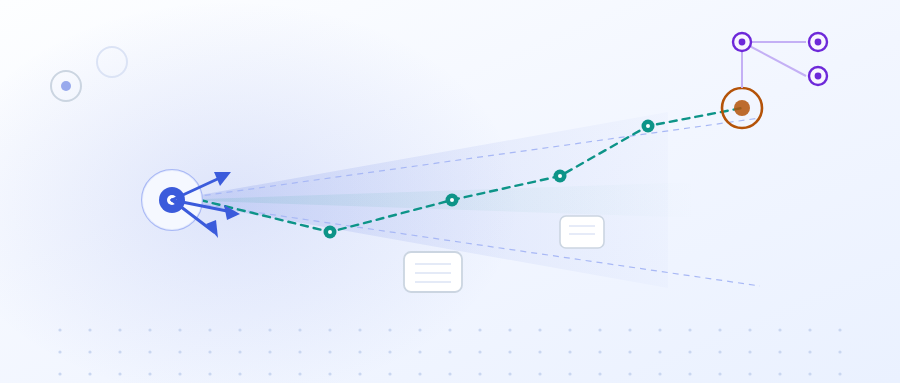
Bourg & Seemann 的 O'Reilly 经典（东南大学出版社中文版，369 页）。含追逐闪躲与拦截预测、移动模式、群聚三规则、势函数统一四种行为、绕障与航点导航、A* 完整手算一遍与影响力图、脚本引擎的四层台阶、蚂蚁世界状态机、模糊逻辑七步与去模糊化、格斗出招预测、贝叶斯推断四个案例、反向传播与遗传算法四步演化，最后用一张守卫 NPC 的十层设计把全书串起来，附技术选型表与术语速查表。
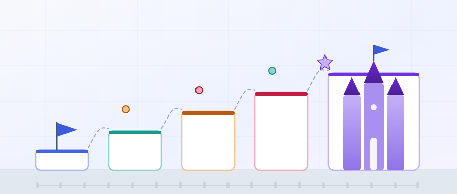
Scott Rogers（《战神》《吃豆人世界》设计师）那本「关卡制」的设计手册。含剧情三角论与三类玩家对策、四份文档到 GDD 的完整阶梯、3C（角色/镜头/操作）三角关系、HUD 元素清单、迪士尼「小香肠」与灰盒、战斗三要素与反馈回路、敌人体积五档、Boss 设计五问，以及一张「卡住时问自己哪一句」的速查表。
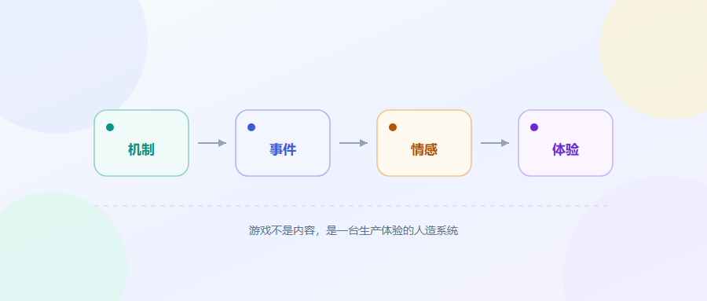
泰南·西尔维斯特把 428 页拆成「机制 → 事件 → 情感 → 体验」一条因果链。含 13 类情感触发器与虚构层、优雅的 9 条判据与掠夺者 VS 恶火、决策范围五档、纳什均衡与心理战、灰盒与「幻想的误区」、依赖堆栈与层叠式不确定性，以及一张从症状直接查章节的速查表。
不做名词背诵，把每个模式还原成「它在防哪一种变化」。含 8 类重新设计原因及对策、23 张结构图、最容易选错的六组对照、Lexi 文档编辑器完整案例，以及 Norvig「模式是语言缺陷报工单」的批评与今日语言吃掉模式对照表。
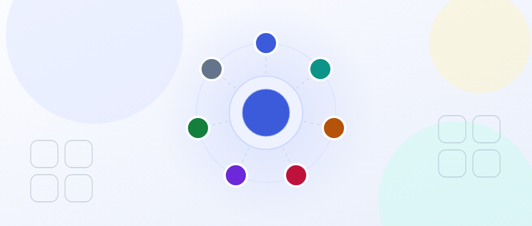
SOLID 五条，加上被漏掉最多的迪米特法则与合成复用原则。从设计腐烂的七个症状讲起，说清每条原则要治什么病、违反时在代码里长什么样、以及它的代价；最后用一个订单案例，从 120 行的上帝类走到可扩展结构。
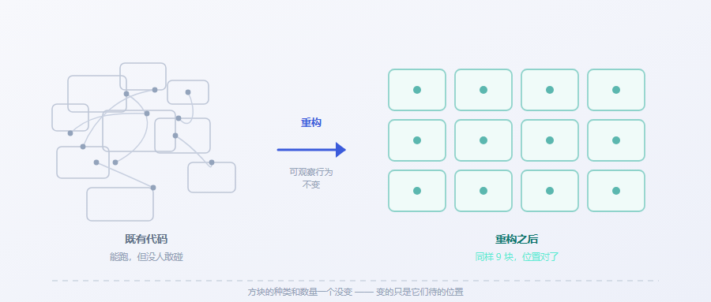
这本书不教怎么写代码，教你代码跑起来之后依然敢动它。24 种代码坏味道、60+ 重构手法、两顶帽子与设计耐久性假说，最后用戏剧团计费案例完整走一遍从 40 行单函数到多态结构的五步路径。
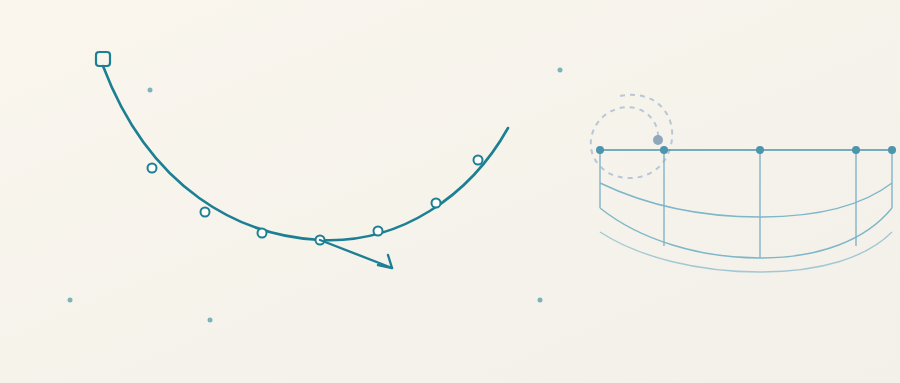
从泰勒展开推出位置 Verlet，讲透隐式速度为什么天然稳定、Jakobsen 松弛怎么把约束当几何命令、布料三类约束与投影式碰撞，再到 substep 与 XPBD。附 3 个可拖拽的 canvas 演示。
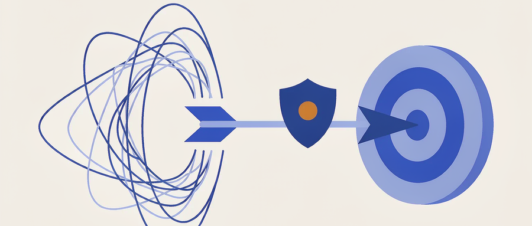
富兰克林柯维 25 年的方法论压成 10 张图。讲清什么是「旋风」、WIG 的四条规则、引领性指标的两个检验、五秒看懂的记分牌，以及每周 20 分钟的 WIG 会议怎么开。
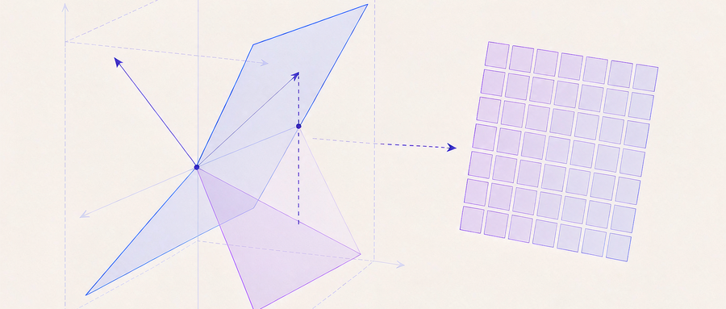
440 页的第 6 版压成 25 张图 + 20 个能跟着算的例子。从「Ax 就是列的配方」出发，讲透四个基本子空间与五大矩阵分解，一路算到 Fibonacci、化学配平、图像压缩和深度学习里的权重矩阵。
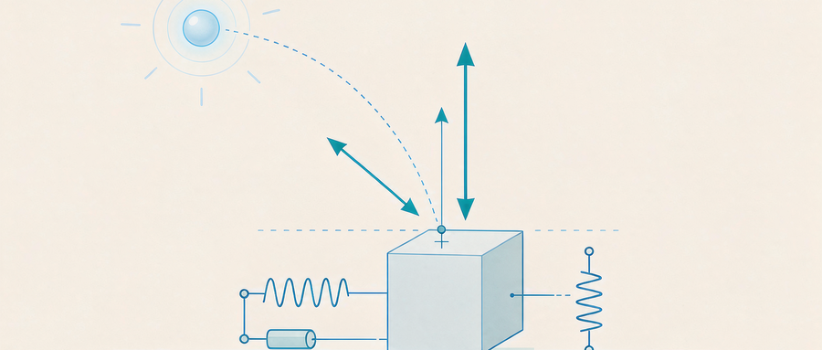
Ian Millington 这本经典压成 33 张图。粒子 → 刚体 → 碰撞检测 → 冲量求解，逐个把「为什么这么设计」讲透；公式与参数全部对照官方 Cyclone 源码核对过。
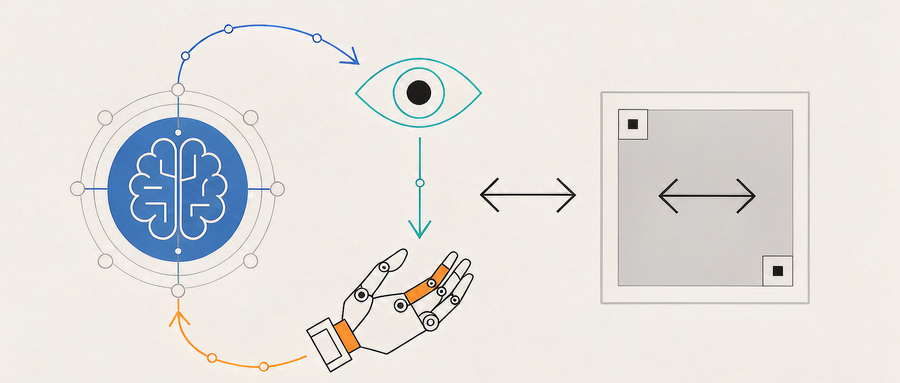
310 页的书压成 20 张图。从「Agent = LLM + 上下文 + 工具」这一个公式出发，讲清 ReAct 循环、上下文工程、工具设计、评估与多 Agent 协作。
Unity / C#，横版动作方向。折腾动画系统和 UI 适配居多。
Agent 工程实践，顺手把读到的东西整理成图解教程。
纯静态、零构建。想到什么写什么，慢慢长。
我是 ptato，写代码、做游戏，业余读点书。
这个站没有主题、没有评论、没有统计，只有内容和链接 —— 我想让它保持这个样子。
想聊点什么，GitHub 上找我最快。